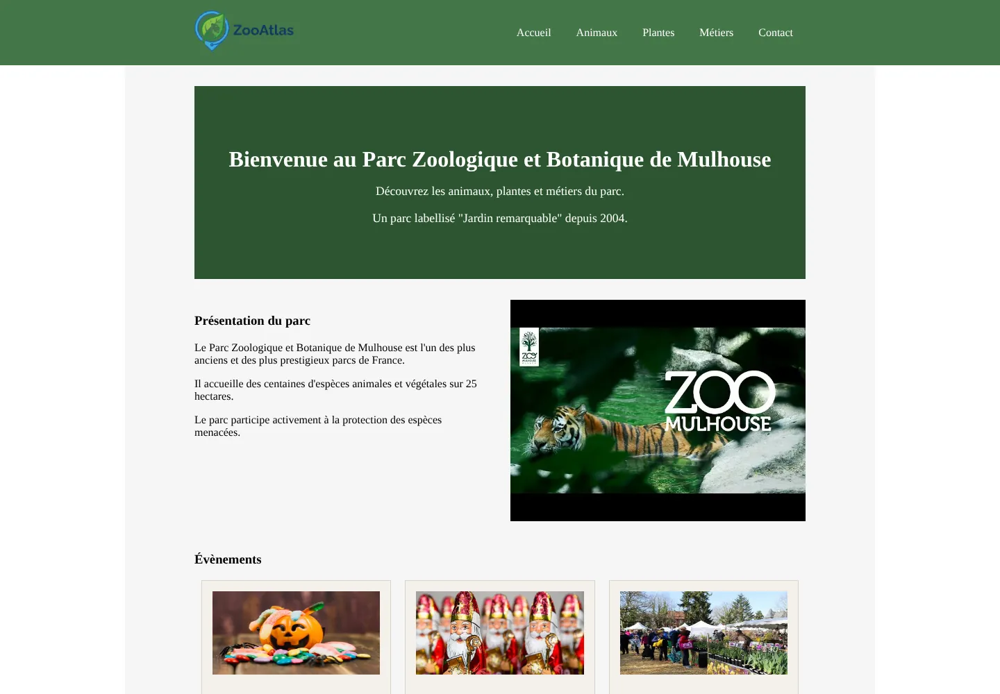
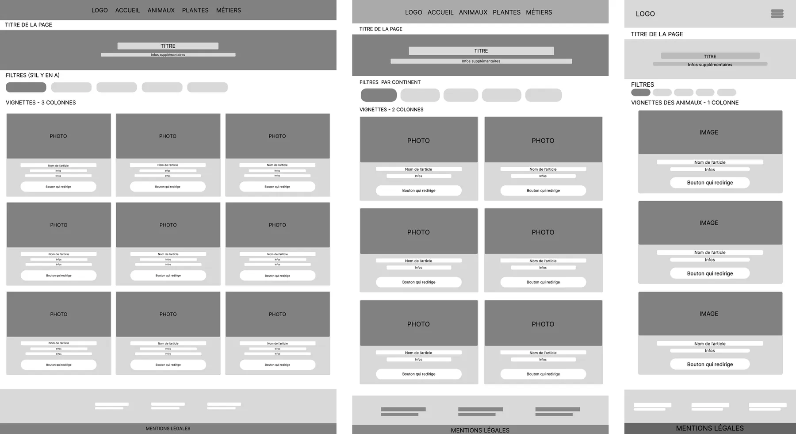
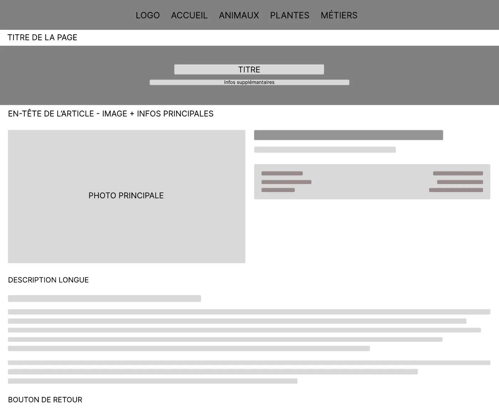
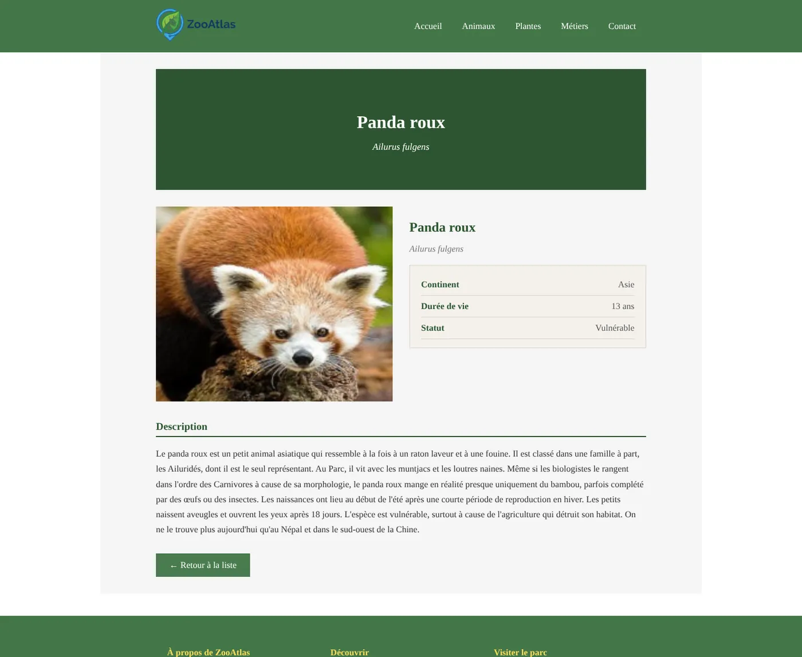
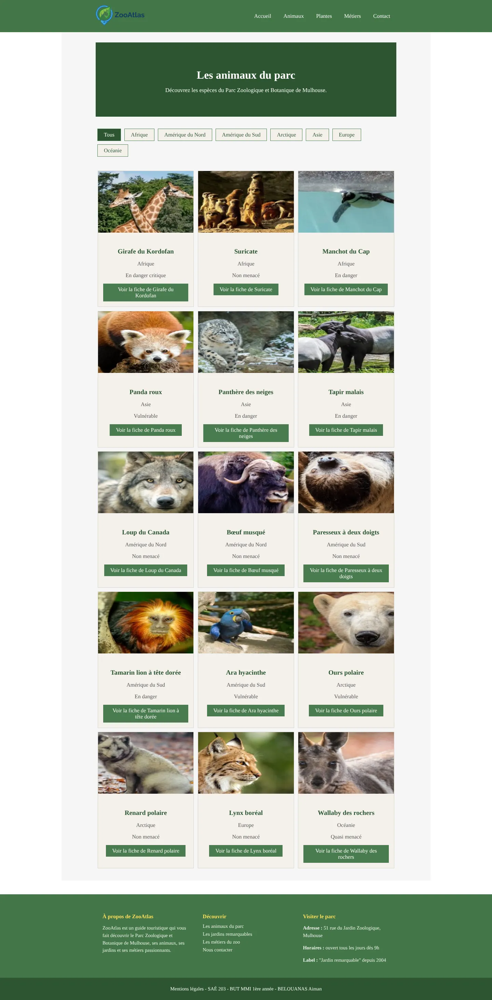
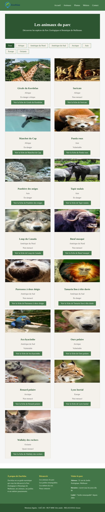

ZooAtlas
Un guide du Parc zoologique et botanique de Mulhouse. Je l’ai conçu en wireframes sur trois tailles d’écran, puis codé seul, de la base de données à la mise en ligne.
- Mon rôle
- Conception et code
- Équipe
- Seul
- Date
- Mai-juin 2026, SAÉ 203
- Outils
- Figma, PHP, Twig, MySQL

Le problème
Le sujet demandait un vrai site touristique, alimenté par une base de données. J’ai choisi le Parc zoologique et botanique de Mulhouse, qui réunit trois univers : les animaux, les jardins et les métiers du parc.
Le défi : présenter beaucoup de contenus (des fiches longues, avec des noms scientifiques) sans perdre le visiteur, que ce soit sur un ordinateur ou sur un téléphone dans les allées du parc.
- 15
- espèces animales
- 6
- jardins remarquables
- 12
- métiers du parc
- 5
- tables dans la base
Trois tailles d’écran
J’ai dessiné les quatre gabarits du site (accueil, catégorie, fiche et contact) en trois tailles : ordinateur, tablette et téléphone. Décider dès le wireframe comment chaque page se réorganise m’a évité de « bricoler » le responsive à la fin.

Les données
Toutes les fiches viennent d’une base MySQL. Je l’ai modélisée en 5 tables. La relation entre les animaux et les continents permet de filtrer les animaux par continent, un besoin concret pour un visiteur qui prépare sa balade.
animaux
- id_animal
- nom
- nom_scientifique
- statut
- id_continent
continents
- id_continent
- nom_continent
plantes
- id_plante
- nom
- origine
- type_plante
metiers
- id_metier
- nom
- formation
- domaine
contacts
- id_contact
- nom
- message
Côté code, Twig sépare l’affichage des données : un seul gabarit de base, réutilisé par toutes les pages, et une boucle qui génère chaque vignette.
Du wireframe au site
Le site final suit fidèlement le wireframe : la bannière, l’image et les informations clés côte à côte, puis la description et le bouton de retour.


Le site sur chaque écran
Deux points de rupture (960 et 600 pixels) suffisent : les vignettes passent de 3 à 2 puis à 1 colonne, et le menu devient un bouton burger sur téléphone. Choisissez un écran, puis faites défiler la page à l’intérieur.


Sécurité et mise en ligne
Toutes les requêtes passent par des requêtes préparées PDO, et les identifiants reçus dans l’adresse sont convertis en nombres : un visiteur ne peut pas injecter de code SQL. Le formulaire de contact enregistre les messages dans la base, puis redirige pour éviter un double envoi si l’on actualise la page.
Le site a été mis en ligne sur deux serveurs, avec des pages d’erreur 403 et 404 personnalisées.
Ce que j’en retiens
Par rapport à mon premier site en Twig, j’ai franchi une étape : une vraie base de données, des requêtes sécurisées et une mise en ligne. Concevoir d’abord en wireframes m’a fait gagner beaucoup de temps au moment de coder.
Ce que je corrigerais aujourd’hui
- L’accessibilité : il manque un titre de niveau 1 sur chaque page, et le menu burger n’est pas utilisable au clavier.
- Les images : elles sont déformées par une hauteur fixe. Il suffit d’ajouter
object-fit: cover. - Les erreurs : une fiche qui n’existe pas devrait mener à la page 404, au lieu d’une page vide.
- La typographie : le site s’affiche avec la police par défaut du navigateur. Une vraie police renforcerait l’identité du parc.
Projet suivant